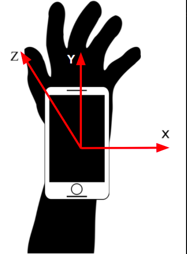

About
What we Do
As the heart of an orchestra and the glue that keeps it together, being a conductor is a crucial, and often daunting, task.
And just like the musicians they are leading, conductors need to practice to conduct their orchestra effectively.
Besides the possibility of using a metronome to guide their beats, there is no way for conductors to gauge how well they are conducting,
and worse, if they are doing it correctly.
What we aim to achieve with ConductorViewer is to remove the doubt conductors have when they conduct, and allow them to receive feedback on how well they are conducting,
and based on what information our product gives them, they can learn and improve themselves to fix their mistakes efficiently and perform flawlessly on stage.
How it Works

ConductorViewer uses a single sensing device, such as a smartphone, attached to a person's wrist.
The accelerometer on the sensing device reads the movement of the conductor and give feedback on two parameters:
- Tempo Readings
- Consistiency Score for the BPM (Beats Per Minute).
Using these parameters based on the sensor data, the device transmits feedback to the conductor so they know what they are doing,
and improving themselves to help lead the musicians playing in the orchestra.
Citations
Dirican, Ahmet Cengizhan, and Selim Aksoy.
“Step Counting Using Smartphone Accelerometer and Fast Fourier Transform.”
Sigma Journal of Engineering and Natural Scienceswww, vol. 8, no. 2, 2017, pp. 175-182.
Sigma Journal of Engineering and Natural Sciences, https://sigma.yildiz.edu.tr/article/538.
McElheran, Brock. Conducting technique: for beginners and professionals. Oxford University Press, 1989.
Zijlstra, Wiebren, and At L. Hof.
“Assessment of spatio-temporal gait parameters from trunk accelerations during human walking.”
Gait & Posture, vol. 18, no. 2, 2003, pp. 1-10. Science Direct,
https://doi.org/10.1016/S0966-6362(02)00190-X.
Tow, Emily, et al. Qualitative Engineering Analysis III
Motion Model
For our proof of concept, we focused on accelerometer data from a smartphone.
The phone collects the output on the X, Y, and Z axes of the accelerometer, as well as the current time associated with each data point received.
We can use the data we received and send it over to the computer for analysis using MATLAB,
where we can determine the most prominent frequencies of movement
by focusing on the directional axes of the accelerometer, as seen in the image below.

In order to determine the tempo of the conducting, we must determine the most prominent frequencies of movement from the analyzed data.
By placing the phone on the user's wrist as shown below, we can use the directional axises to focus on the user's motion in the X, Y, and Z directions.
When conducting, we recognize that most conducting patterns involve on up/down motion per beat, knowing that the acceleration of motion
should be roughly periodic with a period of one beat. We analyzed two conducting patterns of a 2/4 time signature and 4/4 time signature, as shown below respectively.

In the pictures above, you can see the motion for 2/4 and 4/4 time signature. We should see a peak at the tempo the piece was conducted in. We expect this to be the most
apparant in the z axis (up and down) becuase we can clearly capture the downward stroke. In all the axes, we expect to see peaks that are multiples of the tempo due to
motion of the the piece. For example, for a 2/4 time signature, we should see a peak at half the frequency in the z axis because there are two downward strokes for one beat.
You can see that as you go from 1 to 2, there would be a downard acceleration as you move down the loop.
Algorithms
Pre-Processing
Our data consists of two sets of data with a 2/4 time signature and 4/4 time signature at five different tempos each (60BPM - 140BPM) with acceleration data in the x, y, and z directions.
Before processing our data through the Fourier Transfrom, we first created a MATLAB structure array to store all the data we collected for easier manipulation.
We cut off the first and last 2 seconds so as to only capture the conducting motion and mean-centered the data to remove the gravity component in our data.
The algorithm splits the received conducting data into several chunks for later consistency score calculations.
Fourier Transforms
In order to determine the current tempo of the music,
we analyze the accelerometer data by applying a Fourier Transform, a method we used to find the frequencies that the system
is undergoing and decomposes a signal into the frequencies that make it up.
The main idea behind the Fourier Transform is that any continuous signal in the time domain
can be represented by an infinite series of sinusoidal waves,
which was beneficial in our project for identifying the tempos within each recorded data segment.
We used it on each segment on all axes to convert from the time domain to the frequency domain. We found using the axis with the highest magnitude in frequencies were the
most clear to determine the tempo. Looking at the major axis, we noticed unqiue characteristics for 2/4 and 4/4 time signatures.
We found that for all 2/4 time signatures for all tempos, there were 3 big peaks, with the middle being the acutal tempo. The other peaks occur at
0.5 and 1.5 times the actual tempo due to the conducting motion for 2/4. For 4/4, there is only one big peak occuring at the tempo.
The tempos for each segment are found using the method explained above and are compared to each other.
From this we can analyze the consistency rate of the conducting as well as average the overall tempos to get the overall tempo.
Tempo Calculations
We are able to receive the tempos by applying an FFT to all axes of the data, next separating the axis containing the largest magnitude where the large
magnitude indicates the axis with the most significant motion, which is what we want to analyze.
Then, remove negative bpm values from the results and find the peaks in the fft for the axis with the largest magnitude.
The peaks must have a prominence of at least half of the maximum magnitude (this was determined experimentally to work well.)
If there is only one peak, that is the one indicating the tempo and if there are multiple peaks, the one with the highest BPM out of the
two with the largest magnitude is the one indicating the tempo
Consistency Score Calculations
With the our data going through the Fourier Transform, we can calculate the variation in tempo over time within a conducting data collection session.
The function essentially calculates the overall tempo for the data, and uses that to determine the size of a window to "slide" over the data.
The window length is the length of a specified number of beats in the
calculated overall tempo. The function then calculates the apparent
tempo for the a segment of the data with that length starting at
incrementing samples. e.g. with a window length of 10 samples, the
tempo is calculated for samples 1-10, 2-11, 3-12, 4-13, and so on. This
basically gives us the tempo over time.
Below is the consistency score calculations with a consistent, accurate tempo followed by an inconsistent, inaccurate tempo.

The full repository with all our code for ConductorViewer can be viewed here.
Results
Proof of Concept
With our collected and transformed data, we are able to accurately identify tempos based on the received data, as shown below.
We are also able to calculate how accurate the conducting is based on a consistent tempo.
Next Steps
With our current state, we are able to identify tempos and accuracy rates of the person conducting.
However, there are some segments that can be improved on, or additional capabilities of the program.
Consistency Score Improvements
As of now, we calculate our consistency score by seperating the data into chunks and analyzing the average tempo of each chunk.
With tempos from each chunk, the program calculated a consistency score by finding the percent error as well as the standard deviation over time.
However, this method gives the conductor a large room for error, something that cannot be said for a real life orchestra.
Therefore, we plan on improving our analysis by accomplishing this in the frequency domain based on the FFT of the entire length of the data
rather than chunks to give the user a more accurate report on their conducting.
Time Signature Analysis
When originally scoping out our project, we planned on including the program to be able to detect different
time signatures from the conducting. However, it wasn't able to be accomplished due to scope
and instead focused on giving the conductors accuracy rates on their conducting.
In the next steps, we will add that component so conductors are able to analyze whether or not they are conducting in
the correct time signature they are meant to play.
Volume Analysis
The volume analysis component would be another addition to our product to analyze how loud the conductor
is indicating when they are conducting. This is a crucial part in musical orchestras as conductors give
dynamics instructions that musicians need to pick up well if they want to give more brilliance in the piece.
Real Time Analysis
As of right now, we can only analyze data as we record it in a chunk and upload that the MATLAB for analysis.
However, we will eventually want our product to have real time analysis so conductors can see their conducting
and what the algorithm reads in real time.